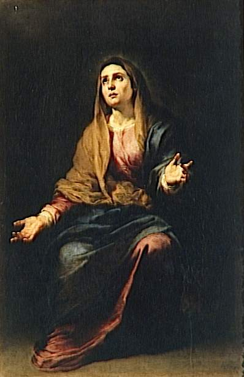

120. ALL our perfection consists in being conformed, united, and consecrated to Jesus Christ; and therefore the most perfect of all devotions is, without any doubt, that which the most perfectly conforms, unites, and consecrates us to Jesus Christ. Now, Mary being the most conformed of all creatures to Jesus Christ, it follows that, of all devotions, that which most consecrates and conforms the soul to our Lord is devotion to His holy Mother, and that the more a soul is consecrated to Mary, the more is it consecrated to Jesus.
Hence it comes to pass, that the most perfect consecration to Jesus Christ is nothing else but a perfect and entire consecration of ourselves to the Blessed Virgin, and this is the devotion which I teach; or in other words, a perfect renewal of the vows and promises of holy Baptism.
121. This devotion consists, then, in giving ourselves entirely and altogether to our Lady, in order to belong entirely and altogether to Jesus by her. We must give her;
§ 1. Our body, with all its senses and its members;
§ 2. Our soul, with all its powers;
§ 3. The exterior goods of fortune, whether present or to come;
§ 4. Our interior and spiritual goods, which are our merits and our virtues, and our good works, past, present, and future.
In a word, we must give her all we have in the order of nature and in the order of grace, and all that may become ours in future in the orders of nature, grace, and glory; and this we must do without any reserve of so much as one farthing, one hair, or one least good action; and we must do it also for all eternity, and we must do it further without pretending to, or hoping for, any other recompense for our offering and service, except the honour of belonging to Jesus Christ by Mary and in Mary, even though that sweet Mistress were not, as she always is, the most generous and the most grateful of creatures.
122. Here we must remark, that there are two things in the good works which we do, namely, satisfaction and merit; in other words, their satisfactory or impetratory value, and their meritorious value. The satisfactory or impetratory value of a good work is the good action, so far as it satisfies for the pain due to sin, or obtains some fresh increase of grace; the meritorious value, or the merit, is the good action, so far as it merits grace now and eternal glory hereafter. Now, in this consecration of ourselves to our Lady, we give her all the satisfactory, impetratory, and meritorious value of our actions; in other words, the satisfactions and merits of all our good works. We give her all our merits, graces, and virtues, not to communicate them to others—for our merits, graces, and virtues are, properly speaking, incommunicable, and it is only Jesus Christ, who, in making Himself our surety with His Father, is able to communicate His merits—but we give her them to keep them, augment them, and embellish them for us, as we shall explain by and by. But we give her our satisfactions to communicate them to whom she likes, and for the greatest glory of God.
123. It follows from this, that:
§ 1. By this devotion, we give to Jesus Christ, in the most perfect manner, inasmuch as it is by Mary’s hands, all we can give Him, and far more than by any other devotions, in which we give Him either part of our time, or a part of our good works, or a part of our satisfactions and mortifications; whereas here everything is given and consecrated to Him, even to the right of disposing of our interior goods, and of the satisfactions which we gain by our good works daily. This is more than we do even in a religious order. In religious orders we give God the goods of fortune by the vow of poverty, the goods of the body by the vow of chastity, our own will by the vow of obedience, and sometimes the liberty of the body by the vow of cloister. But we do not by those vows give Him the liberty or the right to dispose of the value of our good works; and we do not strip ourselves, as far as a Christian man can do so, of that which is dearest and most precious to Him, namely, his merits and satisfactions.
124. § 2. A person who is thus voluntarily consecrated and sacrificed to Jesus Christ by Mary can no longer dispose of the value of any of his good actions. All he suffers, all he thinks, all the good he says or does, belongs to Mary, in order that she may dispose of it according to the will of her Son, and His greatest glory, without, however, that dependence prejudicing in any way the obligations of the state we may be in at present, or may be placed in for the future; for example, without prejudicing the obligations of a priest, who, by his office or otherwise, ought to apply the satisfactory or impetratory value of the holy Mass to some private person; for we make the offering of this devotion only according to the order of God and the duties of our state.
125. § 3. We consecrate ourselves at one and the same time to the most holy Virgin and to Jesus Christ: to the most holy Virgin, as to the perfect means which Jesus Christ has chosen, whereby to unite Himself to us, and us to Him; and to our Lord, as to our Last End, to whom we owe all we are, as our Redeemer and our God.
126. I have said that this devotion may most justly be called a perfect renewal of the vows or promises of holy Baptism.
For every Christian, before his Baptism, was the slave of the devil, seeing that he belonged to him. He has in his Baptism, by his own mouth or by his sponsor’s, solemnly renounced Satan, his pomps and his works; and he has taken Jesus Christ for his Master and Sovereign Lord, to depend upon Him in the quality of a slave of love. This is what we do by the present devotion. We renounce, as is expressed in the formula of consecration, the devil, the world, sin, and self; and we give ourselves entirely to Jesus Christ by the hands of Mary. Nay, we even do something more; for, in Baptism, we ordinarily speak by the mouth of another, namely, by our godfather or godmother, and so we give ourselves to Jesus Christ not by ourselves but through another. But in this devotion we do it by ourselves, voluntarily, knowing what we are doing.
Moreover, in holy Baptism, we do not give ourselves to Jesus by the hands of Mary, at least not in an expressed manner; and we do not give Him the value of our good actions. We remain entirely free after Baptism, either to apply them to whom we please or to keep them for ourselves. But, by this devotion, we give ourselves to our Lord expressly by the hands of Mary, and we consecrate to Him the value of all our actions.
127. Men, says St. Thomas, make a vow at their Baptism to renounce the devil and all his pomps, “In Baptismo vovent homines abrenuntiare diabolo et pompis ejus.” This vow, says St. Augustine, is the greatest and most indispensable of all vows—“Votum maximum nostrum, quo vovimus nos in Christo esse mansuros.” It is thus also that canonists speak: “Prcecipuum votum est, quod in Baptismate facimus.” Yet who has kept this great vow? Who is it that faithfully performs the promises of holy Baptism? Have not almost all Christians swerved from the loyalty which they promised Jesus in their Baptism? Whence can come this universal disobedience, except from our oblivion of the promises and engagements of holy Baptism, and from the fact that hardly anyone ratifies of himself the contract he made with God by those who stood sponsors for him?
128. This is so true, that the Council of Sens, convoked by order of Louis the Debonnaire to remedy the disorders of Christians, which were then so great, judged that the principal cause of that corruption of morals arose from the oblivion and ignorance in which men lived of the engagements of holy Baptism; and it could think of no better means for remedying so great an evil than to persuade Christians to renew the vows and promises of Baptism.
129. The Catechism of the Council of Trent, the faithful interpreter of that holy Council, exhorts the parish-priests to do the same thing; and to induce the people to remember themselves, and to believe that they are bound and consecrated to our Lord Jesus Christ, as slaves to their Redeemer and Lord. These are its words: “Parochus fidelem ad eam rationem cohortabitur ut sciat cequissimum esse . . . nos ipsos non secus ac mancipio Redetmptori nostro ac Domino in perpetuum addicere et consecrare” (Cat. Conc. Trid. par. i. c. iii. sec. 4).
130. Now if the Councils, the Fathers, and experience even, show us that the best means of remedying the irregularities of Christians is by making them call to mind the obligations of their Baptism, and persuading them to renew now the vows they made then, does it not stand to reason that we shall do it in a perfect manner, by this devotion and consecration of ourselves to our Lord, through His holy Mother? I say in a perfect manner; because in thus consecrating ourselves to Him we make use of the most perfect of all means, namely, the Blessed Virgin.
131. No one can object to this devotion as either a new or an indifferent one. It is not new; because the Councils, the Fathers, and many authors both ancient and modern, speak of this consecration to our Lord, in renewing the vows and promises of Baptism, as of a thing anciently practised, and which they counsel to all Christians. Neither is it a matter of indifference; because the principal source of all disorders, and consequently of the eternal perdition of Christians, comes from their forgetfulness and indifference about this practice.
132. But some may object that this devotion, in making us give to our Lord by our Lady’s hands the value of all our good works, prayers, mortifications, and alms, puts us into a state of incapacity for succouring the souls of our parents, friends, and benefactors.
I answer them as follows:
§ 1. That it is not credible that our parents, friends, and benefactors, should suffer any damage from the fact of our being devoted and consecrated without exception to the service of our Lord and His holy Mother. To think this, would be to think unworthily of the goodness and power of Jesus and Mary, who know well how to assist our parents, friends, and benefactors out of our own little spiritual revenue, or by other ways.
§ 2. This practice does not hinder us from praying for others, whether dead or living, although the application of our good works depends on the will of our Blessed Lady. On the contrary, it is this very thing which will lead us to pray with more confidence; just as a rich person, who has given all his wealth to his prince, in order to honour him the more, would beg the prince all the more confidently to give an alms to one of his friends who should demand it. It would even be a source of pleasure to the prince to be given an occasion of proving his gratitude toward a person who had stripped himself to clothe him and impoverished himself to honour him. We must say the same of our Blessed Lord and of our Lady. They will never let themselves be outdone in gratitude.
133. Someone may perhaps say, If I give to our Blessed Lady all the value of my actions to apply to whom she wills, I may have to suffer a long time in purgatory.
This objection, which comes from self-love and ignorance of the generosity of God and His holy Mother, refutes itself. A fervent and generous soul who gives God all he has, without reserve, so that he can do nothing more; who lives only for the glory and reign of Jesus Christ, through His holy Mother, and who makes an entire sacrifice of himself to bring it about—will this generous and liberal soul, I say, be more punished in the other world because it has been more liberal and more disinterested than others? Far, indeed, will that be from the truth! Rather, it is toward that soul . . . that our Lord and His holy Mother are the most liberal in this world and in the other, in the orders of nature, grace and glory.
134. But we must now, as briefly as we can, run over the motives which ought to recommend this devotion to us, the marvellous effects it produces in the souls of the faithful, and its practices.
